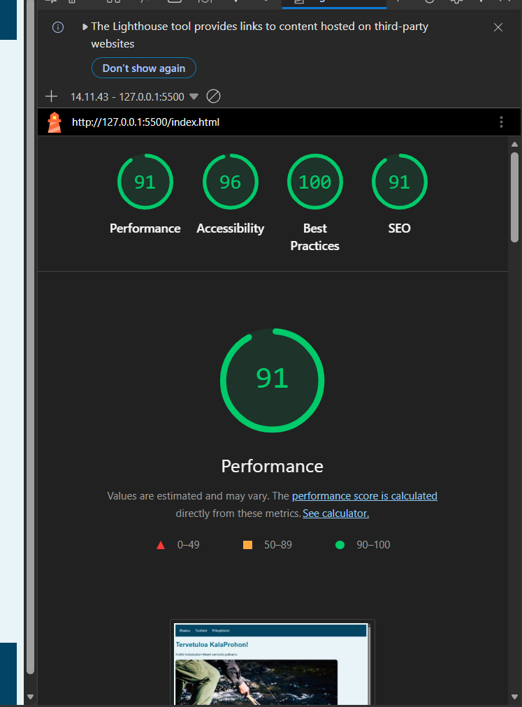
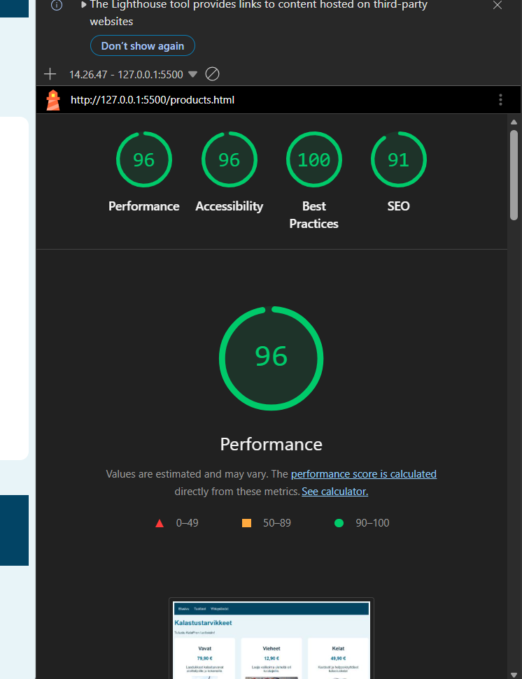
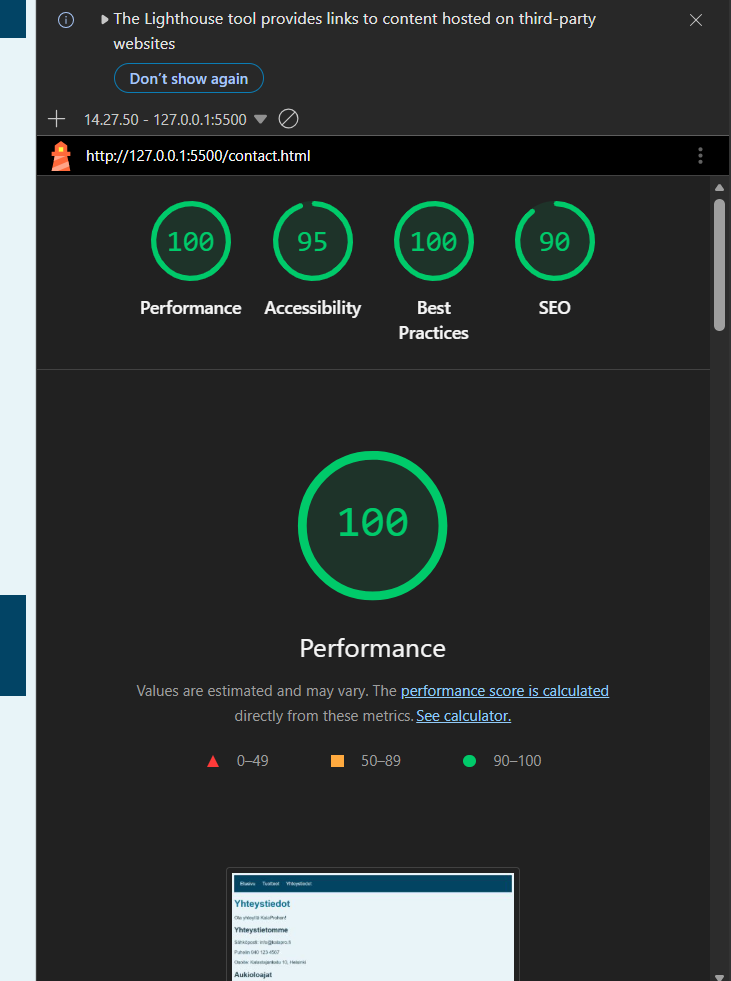

| Sivu | Performance | Accessibility | Best Practices | SEO |
|---|---|---|---|---|
| Etusivu | 91 | 96 | 100 | 91 |
| Tuotteet | 96 | 96 | 100 | 91 |
| Yhteystiedot | 100 | 95 | 100 | 90 |



esimerkki verkkosivuston fonttien määrittämisestä CSS-koodilla.
body {
font-family: Arial, sans-serif;
}